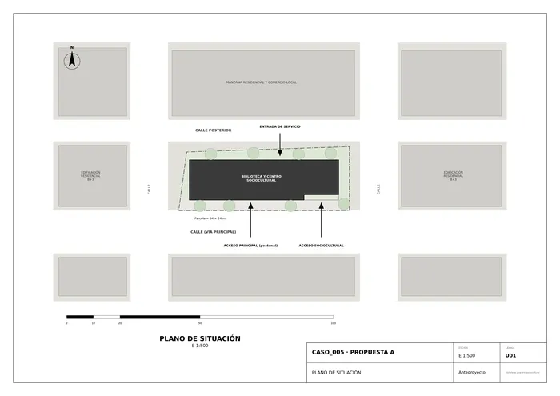
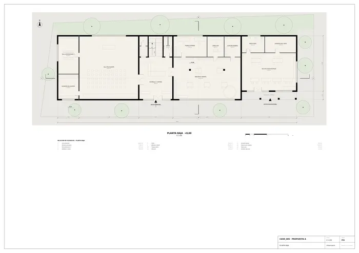
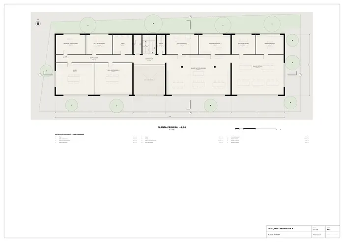
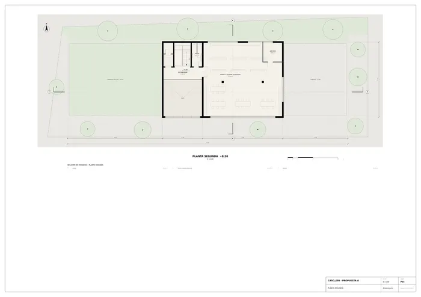
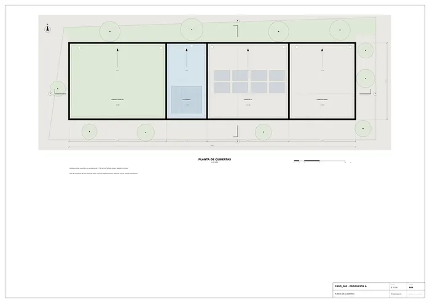
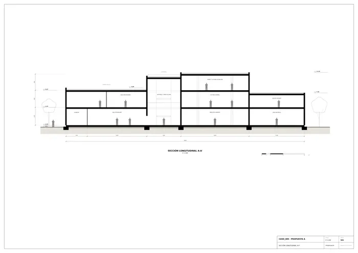
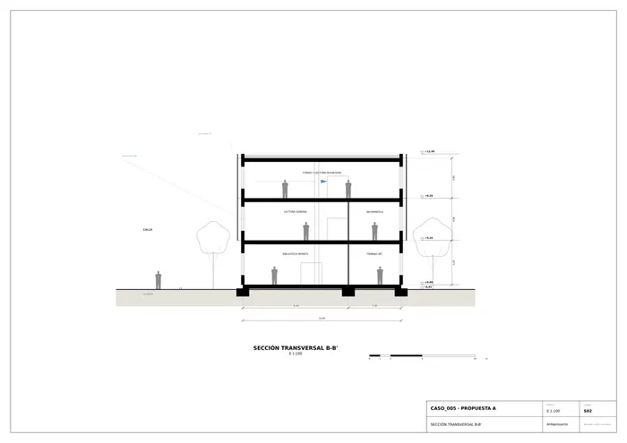
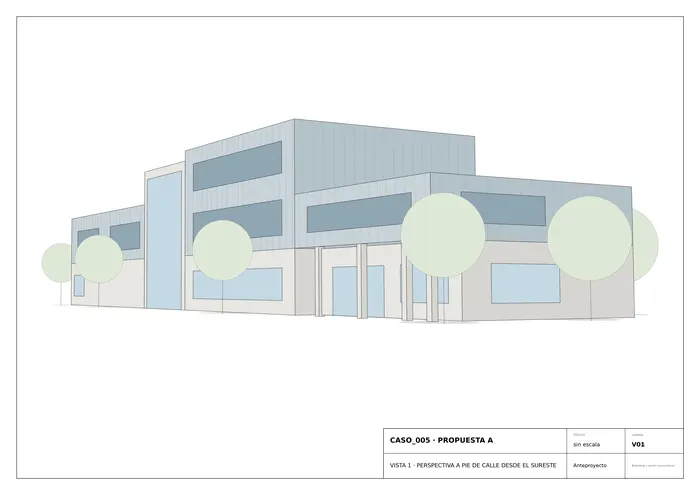
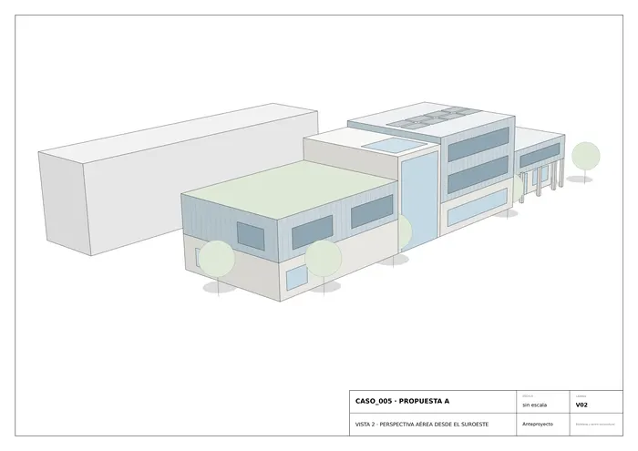

Caso 005 · Singular Studio (J. Moragues; F. Nieto; R. Paternina) · 2014 · equipamiento cultural
El boceto muestra un prisma alargado fragmentado en piezas de distinta altura, con piel de trazos verticales, apoyado sobre una base baja con pilares. La propuesta lo traduce en tres volúmenes superpuestos a un zócalo de hormigón visto y separados por una grieta vertical de vidrio que es el acceso y el vestíbulo de doble altura:
La piel superior es una fachada ventilada de lamas verticales, que recoge el trazo vertical del boceto.
El boceto es un único alzado; se organiza en planta como una barra de 56 × 15 m en la parcela de 64 × 24 m (proporción ≈ 2,5:1, eje mayor este-oeste). Se mantiene la base horizontal, los pilares (pórtico este), el árbol (plaza arbolada al sur) y la fragmentación en alturas. Se añaden el vacío de doble altura, el núcleo de escalera y el programa por plantas. La fachada principal se orienta a sur, hacia la calle y la plaza.
| Uso | m² |
|---|---|
| Biblioteca general (lectura 154,8; fondo y lectura silenciosa 217,8; estudio 125,4 y 27,8; informática 37,4; audiovisual 37,4; prensa 32,6; archivo 14,4) | 647,6 |
| Biblioteca infantil | 154,8 |
| Sala polivalente / exposiciones / charlas | 204,2 |
| Centro sociocultural (salas de asociaciones, taller, usos múltiples, reuniones, despacho) | 365,0 |
| Control, dirección, trabajo interno y almacenes (incl. vestíbulo 76,4) | 177,0 |
| Aseos de asociaciones y generales, almacén sala de usos | ≈ 102 |
| Total útil (sin escaleras ni distribuidores) | ≈ 1.651 |
| Superficie construida (PB 814 + P1 780 + P2 300) | ≈ 1.894 |
Dentro del rango orientativo del encargo (1.300-2.100 m²). Espacio exterior: plaza dura al sur con arbolado y jardín al norte (≈ 1.100 m² de parcela libre).
Estructura de hormigón armado: muros de carga perimetrales de 30 cm y núcleo de comunicaciones, forjados macizos o aligerados con pilares de 40 × 40 cm en las salas grandes (luces de 8 a 14 m, con vigas de canto en la sala polivalente). Pórtico este con pilares de hormigón visto. Cimentación por zapatas corridas bajo muros, sobre solera ventilada. Zócalo en hormigón visto claro; plantas altas con fachada ventilada de lamas verticales de fibrocemento gris azulado; carpintería de aluminio con vidrio bajo emisivo; en la grieta, muro cortina; tabiquería de yeso laminado y fábrica enlucida; suelos de linóleo y microcemento. Cubiertas planas invertidas: vegetal en la pieza oeste, paneles fotovoltaicos en la central, grava en la este.
Las dimensiones de parcela y su orientación son las orientativas del informe. No se encontraron archivos ajenos en la carpeta de salida.

U01 · Plano de situación
P01 · Planta baja
P02 · Planta primera
P03 · Planta segunda
P04 · Planta de cubiertas
S01 · Sección longitudinal A-A'
S02 · Sección transversal B-B'
V01 · Vista 1 · perspectiva a pie de calle desde el sureste
V02 · Vista 2 · perspectiva aérea desde el suroesteMemoria de la propuesta tal como la entregó el sistema. Se han omitido las notas internas del proceso (revisiones, control de reconocimiento y referencias a archivos de trabajo).